ggplot2のすゝめ
はじめに
Rが描いてくれるグラフは便利で分かりやすいのですが、反面、色気がないとか、パラメータの指定方法が統一的でないとか、重ね合わせをするのが面倒であるとか、色々と細かい不満があります。
plot(iris$Sepal.Width, iris$Sepal.Length)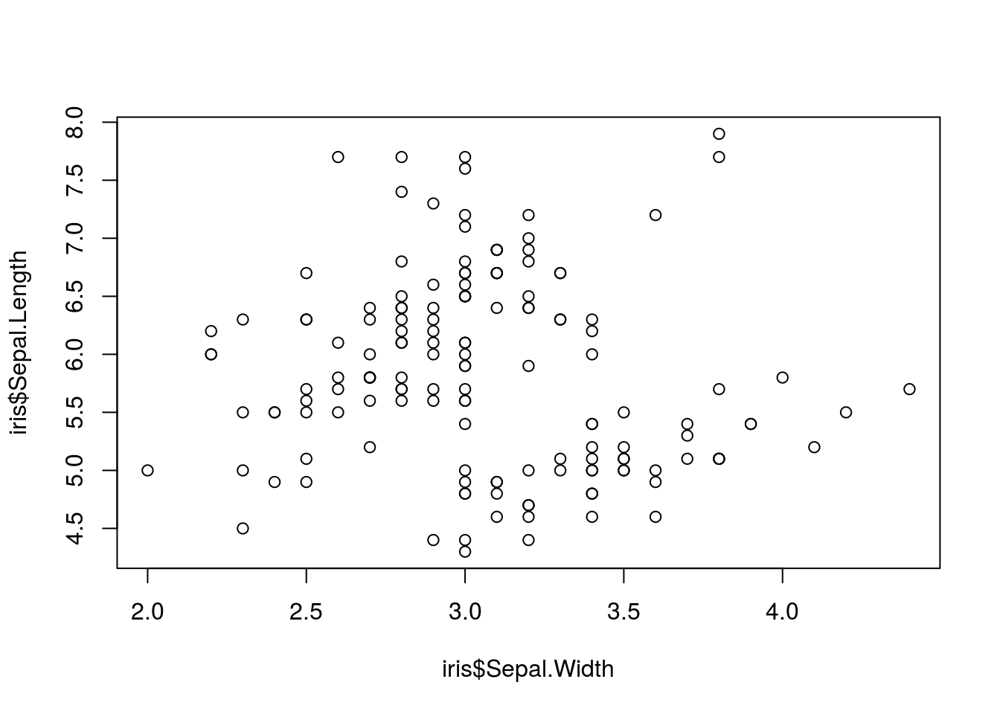
boxplot(iris$Sepal.Length ~ iris$Species)
そこで、データハンドリングで処理したデータフレームを統一的な文法でグラフ化できるggplot2パッケージの出番です。ggplot2パッケージはtidyverseパッケージの一部であり、dplyrパッケージやtidyrパッケージで整形した整然データ（Tidy Data）をそのまま扱います。
iris %>%
ggplot2::ggplot(aes(x = Sepal.Width, y = Sepal.Length)) +
ggplot2::geom_point()
iris %>%
ggplot2::ggplot(aes(x = Species, y = Sepal.Length)) +
ggplot2::geom_boxplot()
このようにggplot2パッケージでは散布図も箱ひげ図も同じ文法で描け、以下のような特徴があります。
- グラフの種類が違っても引数の指定方法は同じ
- グラフの重ね合わせや層別での色分けも簡単
- 描画範囲はデータから自動的に判断
- テーマ機能でお好みのカラーリングに
- グラッフィクパッケージなのでグラフ以外も扱える
1 基本的な使い方
本資料ではggplot2パアッケージのv2.2.1をベースに記述しています。ggplot2の文法は非常にシンプルです。まず、データと座標を用意し、その上に描きたいコンポーネントを重ねていくイメージです。GIS（地理情報システム）やPhotoshopにおけるレイヤー機能と同じような考え方です。先程の描画の例では
iris %>%
ggplot2::ggplot(aes(x = Sepal.Width, y = Sepal.Length)) +
ggplot2::geom_point()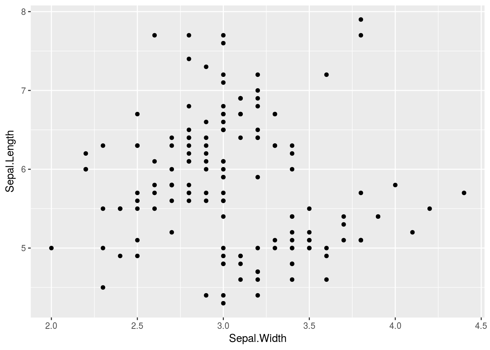
上から順に
- 可視化したいデータを指定する
- x軸とy軸の変数を指定して座標を作る
- 散布図を描く
となっています。以降、順を追って説明します。
1.1 座標軸を用意する
まず、グラフを描くためのベースとなる軸を用意します。今回は、ｘ軸に萼片の幅（Sepal.Width）、ｙ軸に萼片の長さ（Sepal.Length）を指定します。軸はggplot2::ggplot関数内のmapping引数に対してggplot2::aes関数を用いて指定します。
ggplot(data = NULL, mapping = aes(), ..., environment = parent.frame())ggplot2::aes関数はggplo2パッケージにおける肝の一つですので、必ず、覚えておいて下さい。
aes(x, y, ...)では、実際にｘ軸に萼片の幅（Sepal.Width）、ｙ軸に萼片の長さ（Sepal.Length）を指定してみましょう。
iris %>%
ggplot2::ggplot(aes(x = Sepal.Width, y = Sepal.Length))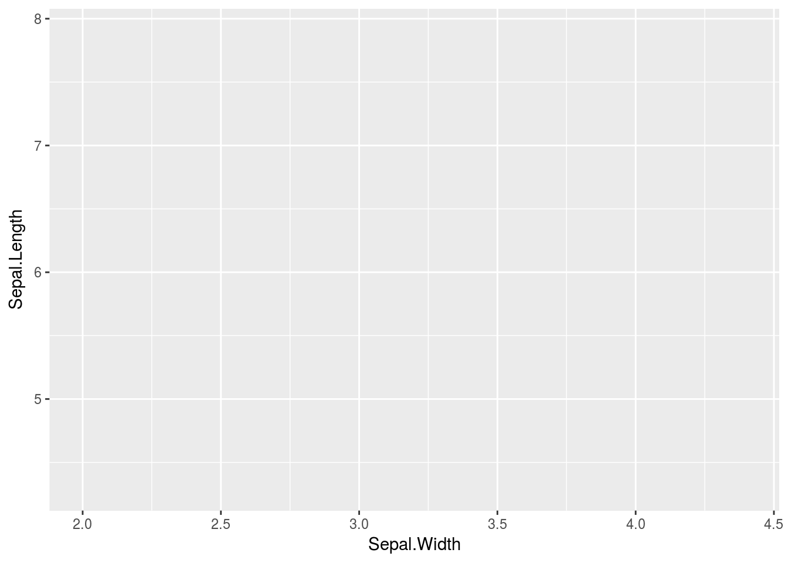
1.2 グラフを描く
用意した軸の上にグラフを描くにはggplot2::geom_関数群を用います。ここでは散布図を描くためにggplot2::geom_point関数を用います。
geom_point(mapping = NULL, data = NULL, stat = "identity",
position = "identity", ..., na.rm = FALSE, show.legend = NA,
inherit.aes = TRUE)ggplot2パッケージは関数を+記号を用いて連結していきます。レイヤーを+で重ね合わせるというイメージです。
iris %>%
ggplot2::ggplot(aes(x = Sepal.Width, y = Sepal.Length)) +
ggplot2::geom_point()
1.3 タイトルをつける
更にこのグラフにタイトルをつけてみましょう。タイトルをつけるにはggplot2::ggtitle関数を用います。
iris %>%
ggplot2::ggplot(aes(x = Sepal.Width, y = Sepal.Length)) +
ggplot2::geom_point() +
ggplot2::ggtitle("みんな大好きiris")
1.4 軸ラベルを変更する
軸のラベルは何も指定しないと変数名が使われますので、分かりやすく変更しておきましょう。軸ラベルを変更するにggplot2::xlab、ggplot2::ylab両関数を用います。
iris %>%
ggplot2::ggplot(aes(x = Sepal.Width, y = Sepal.Length)) +
ggplot2::geom_point() +
ggplot2::ggtitle("みんな大好きiris") +
ggplot2::xlab("がく片の幅") + ggplot2::ylab("がく片の長さ")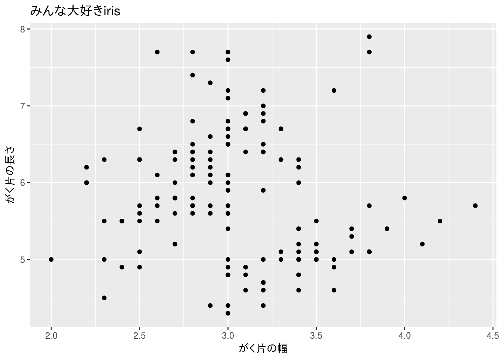
1.5 層別にプロットする
種別（Species）毎に色分けしてみましょう。色分けはggplot2::geom_point関数内で指定します。
iris %>%
ggplot2::ggplot(aes(x = Sepal.Width, y = Sepal.Length)) +
ggplot2::geom_point(aes(colour = Species)) +
ggplot2::ggtitle("みんな大好きiris") +
ggplot2::xlab("がく片の幅") + ggplot2::ylab("がく片の長さ")1.6 回帰直線を描く
散布図が描けましたので回帰直線を加えてみましょう。回帰直線は別途計算する必要はなくggplot2::geom_smooth関数で描けます。
geom_smooth(mapping = NULL, data = NULL, stat = "smooth", position = "identity",
..., method = "auto", formula = y ~ x, se = TRUE, na.rm = FALSE,
show.legend = NA, inherit.aes = TRUE)ggplot2::geom_smooth関数のデフォルト回帰種別は自動選択ですので回帰直線であることをmethodオプションで明示的に指定する必要があります。
iris %>%
ggplot2::ggplot(aes(x = Sepal.Width, y = Sepal.Length)) +
ggplot2::geom_point(aes(colour = Species)) +
ggplot2::ggtitle("みんな大好きiris") +
ggplot2::xlab("がく片の幅") + ggplot2::ylab("がく片の長さ") +
ggplot2::geom_smooth(method = "lm", se = FALSE)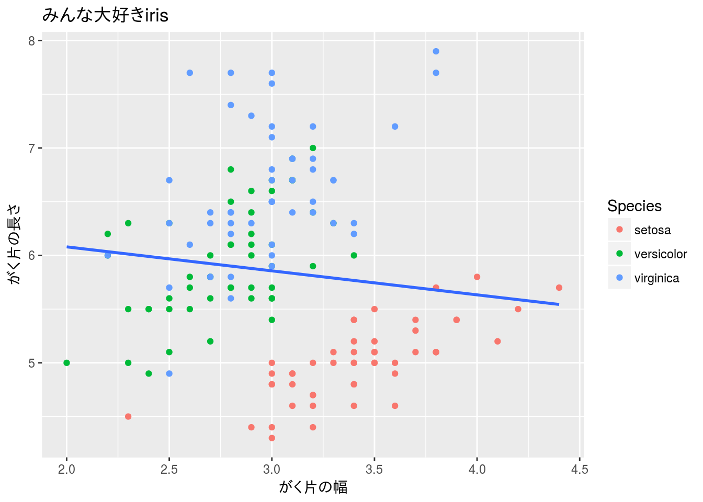
1.7 信頼区間を加える
回帰線の信頼区間を描くにはggplot2::smooth関数でse = TRUEオプション指定をするだけです。なお。デフォルトでは９５％信頼区間が描画されます。
geom_smooth(mapping = NULL, data = NULL, stat = "smooth", position = "identity",
..., method = "auto", formula = y ~ x, se = TRUE, na.rm = FALSE,
show.legend = NA, inherit.aes = TRUE)iris %>%
ggplot2::ggplot(aes(x = Sepal.Width, y = Sepal.Length)) +
ggplot2::geom_point(aes(colour = Species)) +
ggplot2::ggtitle("みんな大好きiris") +
ggplot2::xlab("がく片の幅") + ggplot2::ylab("がく片の長さ") +
ggplot2::geom_smooth(method = "lm", se = TRUE, level = 0.95)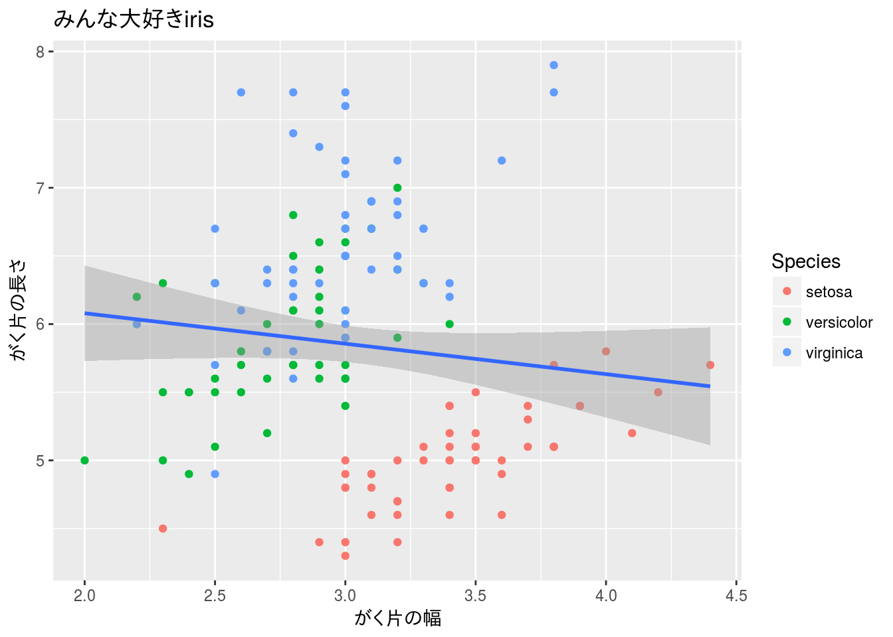
1.8 層別の回帰直線を描く
層別に描くにはcolourオプションの指定をggplot2::geom_point関数ではなく、その一段上のグラフ全体の設定を決めるggplot2::ggplot関数内で指定します。
iris %>%
ggplot2::ggplot(aes(x = Sepal.Width, y = Sepal.Length, colour = Species)) +
ggplot2::geom_point() +
ggplot2::ggtitle("みんな大好きiris") +
ggplot2::xlab("がく片の幅") + ggplot2::ylab("がく片の長さ") +
ggplot2::geom_smooth(method = "lm", se = TRUE)
このようにggplot2::aes関数をどこで指定するかで描画が変わってきます。
1.9 軸の比率を変更する
x軸とy軸の比率を任意に設定することでグラフが見やすくなることがあります。このような場合にはggplot2::coord_fixed関数を用います。なお、ggplot2::coord_equal関数はggplot2::coord_fixed関数のエイリアスです。
coord_fixed(ratio = 1, xlim = NULL, ylim = NULL, expand = TRUE)ここでは比率を１（デフォルト値）に設定してみます。
iris %>%
ggplot2::ggplot(aes(x = Sepal.Width, y = Sepal.Length, colour = Species)) +
ggplot2::geom_point() +
ggplot2::ggtitle("みんな大好きiris") +
ggplot2::xlab("がく片の幅") + ggplot2::ylab("がく片の長さ") +
ggplot2::geom_smooth(method = "lm", se = TRUE) +
ggplot2::coord_fixed()1.10 対数軸を用いる
対数軸グラフを描く場合はggplot2::cord_trans関数またはggplot2::scale_x_log10、ggplot2::scale_y_log10両関数がありますが対数軸以外も描画可能なggplot2::cord_trans関数を使うのがおすゝめです。
coord_trans(x = "identity", y = "identity", limx = NULL, limy = NULL,
xtrans, ytrans)常用対数“log”を指定して対数軸グラフを描いてみます。データの範囲が狭いのでちょっと見難いですが対数軸で表示すると補助線の間隔が異なってることが分かります。
iris %>%
ggplot2::ggplot(aes(x = Sepal.Width, y = Sepal.Length, colour = Species)) +
ggplot2::geom_point() +
ggplot2::ggtitle("みんな大好きiris") +
ggplot2::xlab("がく片の幅") + ggplot2::ylab("がく片の長さ") +
ggplot2::geom_smooth(method = "lm", se = TRUE) +
ggplot2::coord_trans(x = "log", y = "log")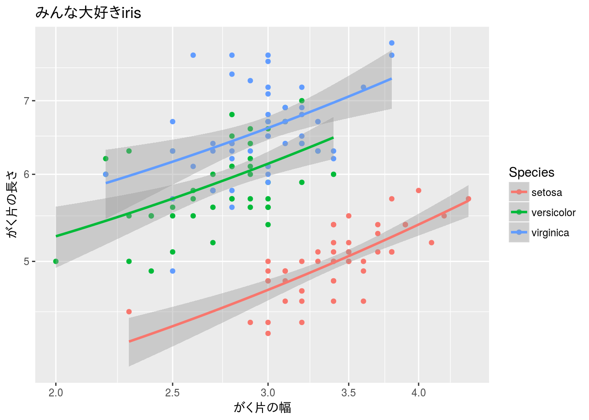
1.11 背景等を変える
グラフ全体の色合い等を変える場合はテーマ関数（ggplot2::theme_）を用います。デフォルトテーマを含め８種類のテーマ関数が用意されています。
theme_gray(base_size = 11, base_family = "") # デフォルトテーマ
theme_bw(base_size = 11, base_family = "")
theme_linedraw(base_size = 11, base_family = "")
theme_light(base_size = 11, base_family = "")
theme_dark(base_size = 11, base_family = "")
theme_minimal(base_size = 11, base_family = "")
theme_classic(base_size = 11, base_family = "")
theme_void(base_size = 11, base_family = "")
ggplot2::theme_classicを用いてグラフテーマをクラッシックに設定してみます。
iris %>%
ggplot2::ggplot(aes(x = Sepal.Width, y = Sepal.Length, colour = Species)) +
ggplot2::geom_point() +
ggplot2::ggtitle("みんな大好きiris") +
ggplot2::xlab("がく片の幅") + ggplot2::ylab("がく片の長さ") +
ggplot2::geom_smooth(method = "lm", se = TRUE) +
ggplot2::theme_classic()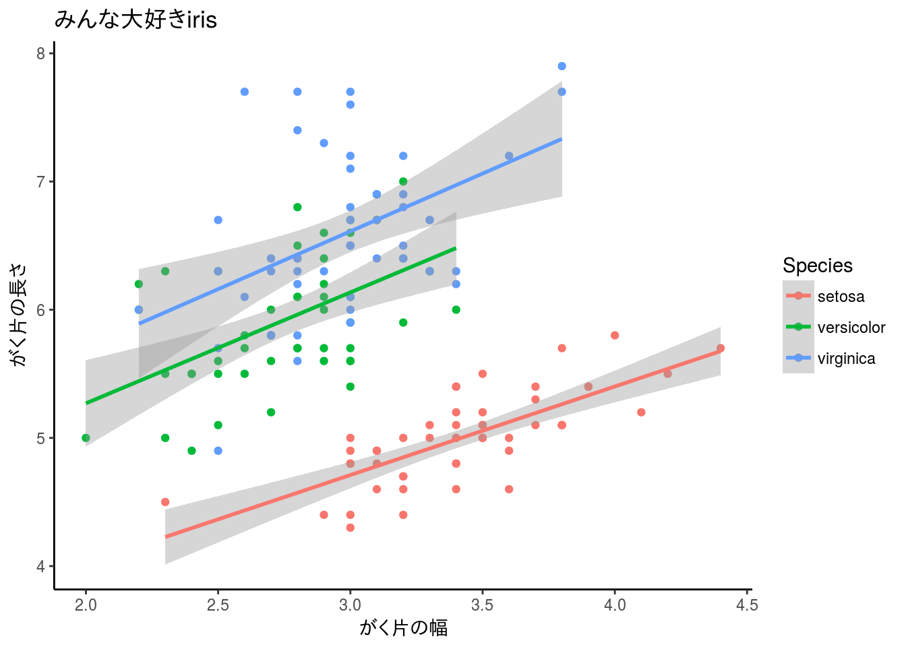
2 応用的な使い方
様々なオプションを指定することでグラフ描画のコントロールが可能です
2.1 サイズを変える
例えば散布図の点の大きさを変えるにはsizeオプションを用います。
iris %>%
ggplot2::ggplot(aes(x = Sepal.Width, y = Sepal.Length, colour = Species)) +
ggplot2::geom_point(size = 5)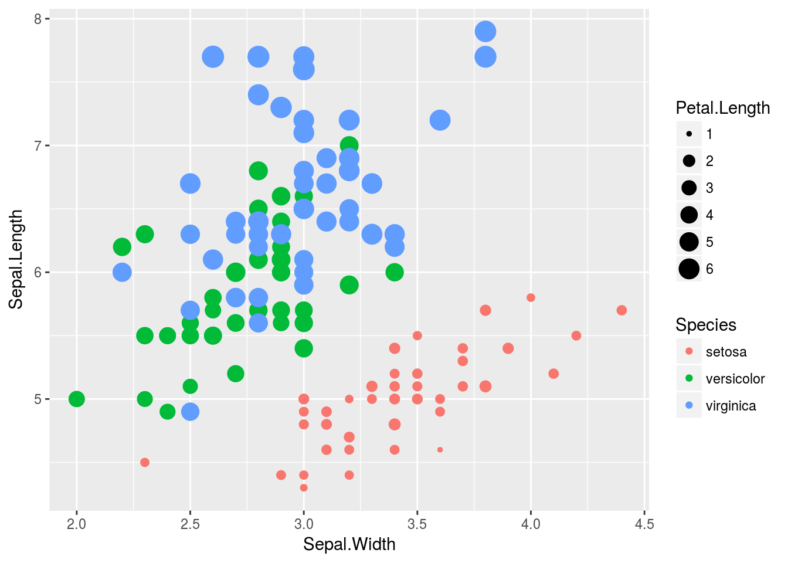
2.2 変数を用いてサイズを変える
更に花弁の長さ（Petal.Length）に応じた点の大きさにしたい場合はggplot2::aes関数の中でsizeオプションを用います。
iris %>%
ggplot2::ggplot(aes(x = Sepal.Width, y = Sepal.Length, colour = Species)) +
ggplot2::geom_point(aes(size = Petal.Length))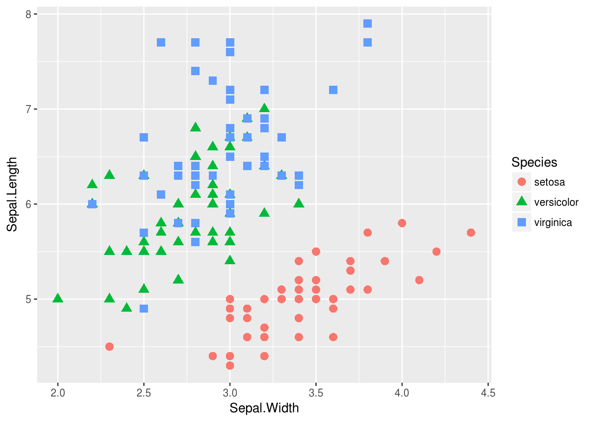
2.3 ヒストグラムを描く
geom_histogram(mapping = NULL, data = NULL, stat = "bin", position = "stack",
..., binwidth = NULL, bins = NULL, na.rm = FALSE,
show.legend = NA, inherit.aes = TRUE)iris %>%
ggplot2::ggplot(aes(x = Sepal.Length)) +
ggplot2::geom_histogram(bins = 20)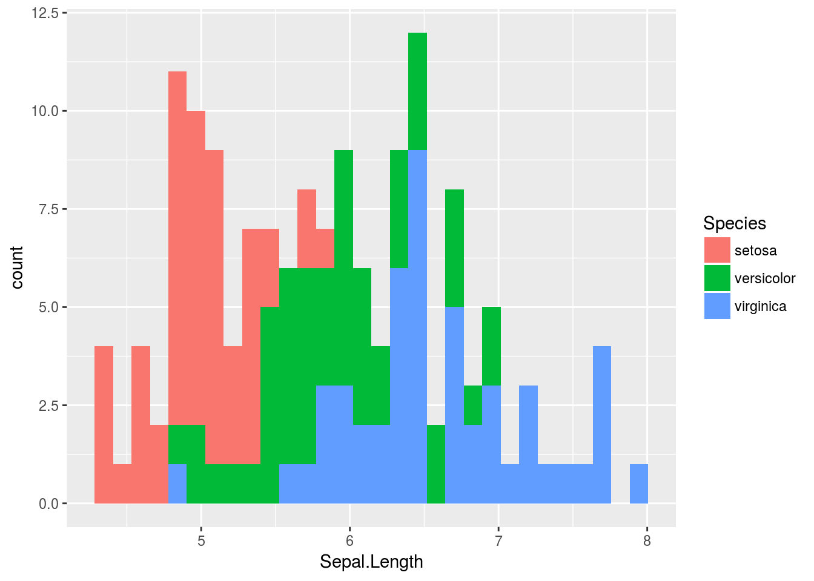
2.4 ヒストグラムを色分けする
geom_histgram関数に対するcolourオプション指定は枠線にしか適用されません。
iris %>%
ggplot2::ggplot(aes(x = Sepal.Length, colour = Species)) +
ggplot2::geom_histogram(bins = 20)ヒストグラム全体を塗り分けしたい場合はfillオプションを利用して下さい。
iris %>%
ggplot2::ggplot(aes(x = Sepal.Length, fill = Species)) +
ggplot2::geom_histogram(bins = 20)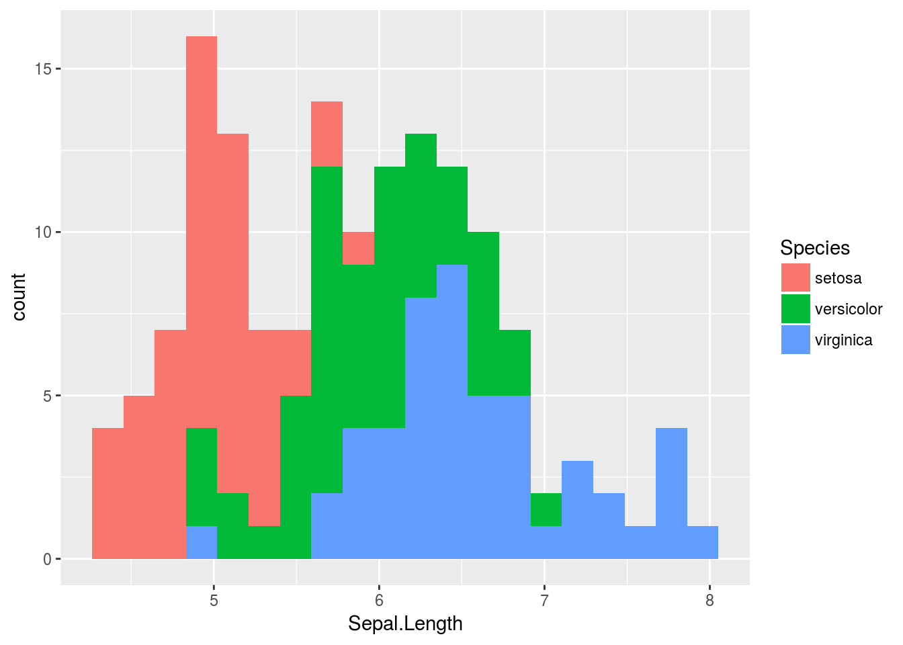
2.5 色の透過度を変える
色の透過度（アルファチャネル）を変更するにはalphaオプションを用います。
iris %>%
ggplot2::ggplot(aes(x = Sepal.Length, fill = Species)) +
ggplot2::geom_histogram(bins = 20, alpha = 0.5)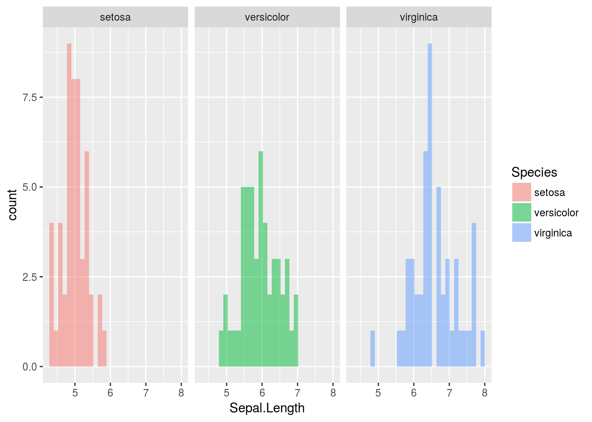
2.6 ヒストグラムを重ねて描く
positionオプションを用いるとデフォルトの積み上げヒストグラムを層別の独立ヒストグラムとして描くことができます。
iris %>%
ggplot2::ggplot(aes(x = Sepal.Length, fill = Species)) +
ggplot2::geom_histogram(bins = 20, position = "identity", alpha = 0.5)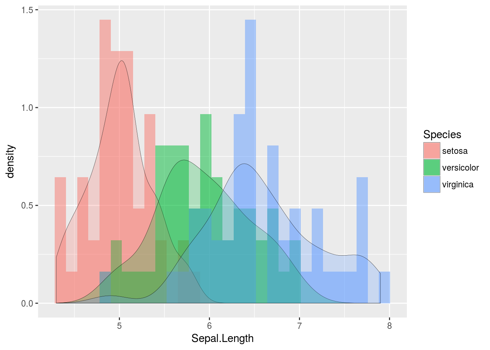
上図では今ひとつ分かりにくいかも知れませんが、下図の三つのグラフが重ね合わされて描かれており、重なっている部分の色が濃くなっています。 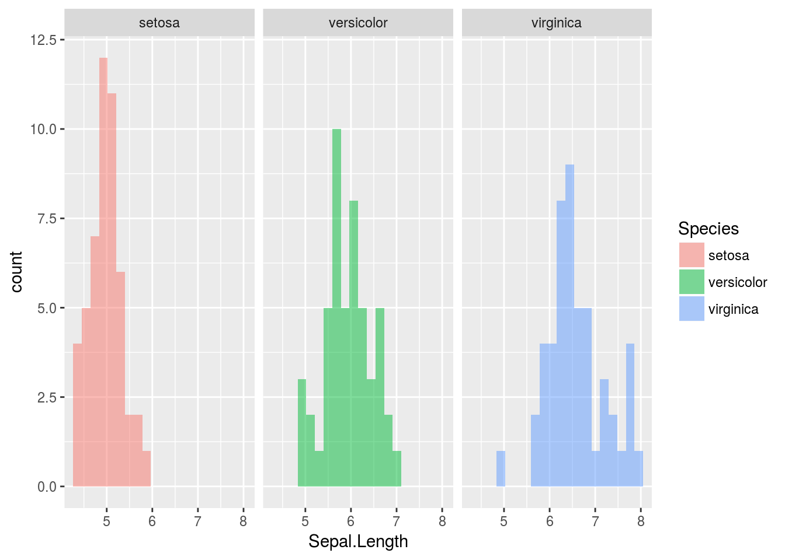
2.7 密度関数を上書きする
密度関数に対するsizeオプションは線の太さとして適用されます。
geom_density(mapping = NULL, data = NULL, stat = "density",
position = "identity", ..., na.rm = FALSE, show.legend = NA,
inherit.aes = TRUE)iris %>%
ggplot2::ggplot(aes(x = Sepal.Length, y = ..density.., fill = Species)) +
ggplot2::geom_histogram(bins = 20, position = "identity", alpha = 0.5) +
ggplot2::geom_density(alpha = 0.25, size = 0.1)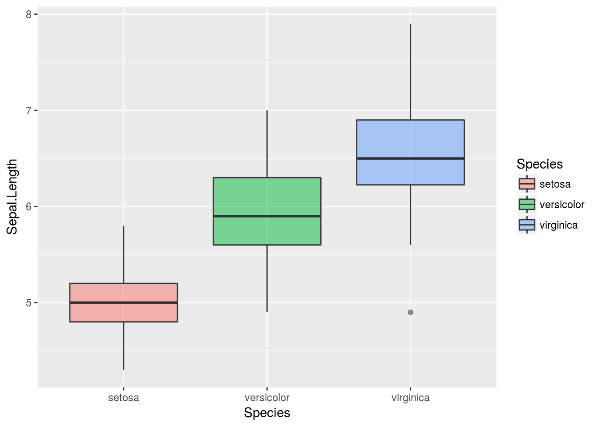
2.8 箱ひげ図を描く
箱ひげ図を描くにはggplot2::geom_boxplot関数を用います。ggplot2::geom_boxplotを層別で使わない場合はｘ軸に適当な値を指定してください。
geom_boxplot(mapping = NULL, data = NULL, stat = "boxplot",
position = "dodge", ..., outlier.colour = NULL,
outlier.color = NULL, outlier.fill = NULL, outlier.shape = 19,
outlier.size = 1.5, outlier.stroke = 0.5, outlier.alpha = NULL,
notch = FALSE, notchwidth = 0.5, varwidth = FALSE, na.rm = FALSE,
show.legend = NA, inherit.aes = TRUE)iris %>%
ggplot2::ggplot(aes(x = NA, y = Sepal.Length)) +
ggplot2::geom_boxplot()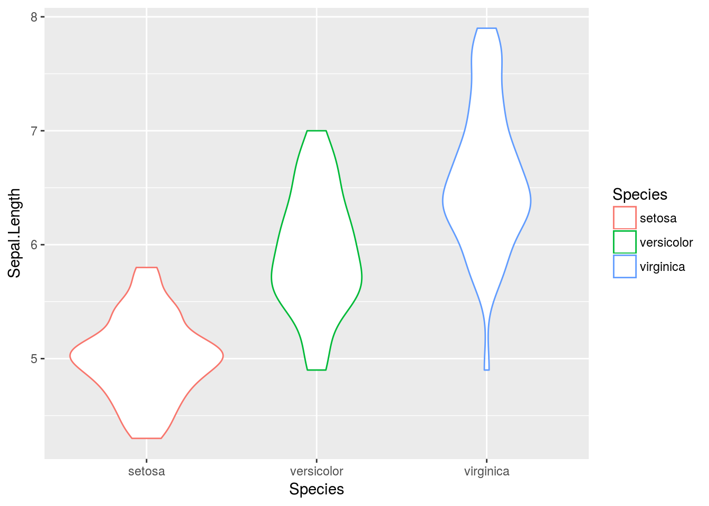
2.9 箱ひげ図を層別で描く
iris %>%
ggplot2::ggplot(aes(x = Species, y = Sepal.Length, colour = Species)) +
ggplot2::geom_boxplot()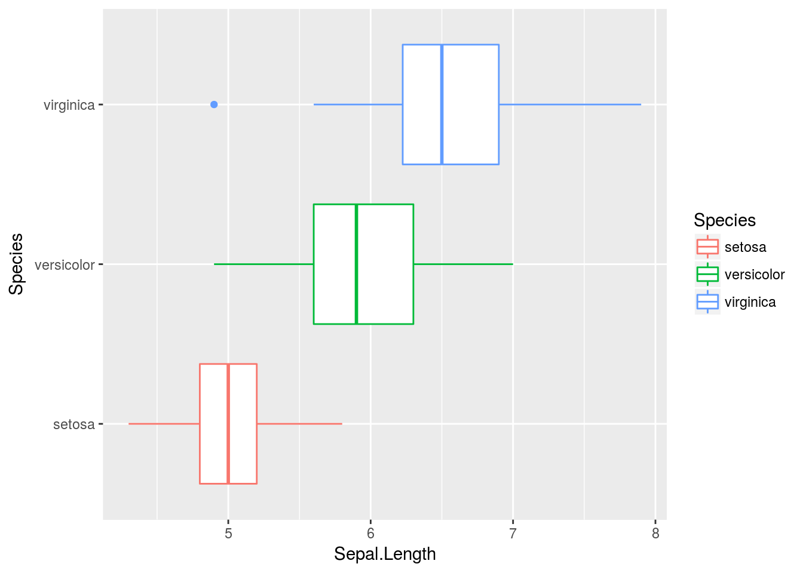
iris %>%
ggplot2::ggplot(aes(x = Species, y = Sepal.Length, fill = Species)) +
ggplot2::geom_boxplot(alpha = 0.5)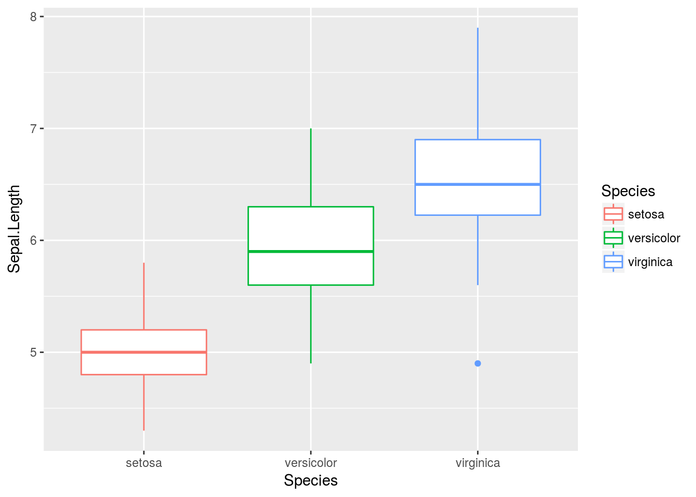
2.10 箱ひげ図にデータを重ねる
箱ひげ図だけではデータの分布傾向が分かりませんのでデータを重ねて描画してみます。この場合はggplot2::geom_jitter関数を用います。
geom_jitter(mapping = NULL, data = NULL, stat = "identity",
position = "jitter", ..., width = NULL, height = NULL,
na.rm = FALSE, show.legend = NA, inherit.aes = TRUE)iris %>%
ggplot2::ggplot(aes(x = Species, y = Sepal.Length, colour = Species)) +
ggplot2::geom_boxplot() +
ggplot2::geom_jitter(aes(size = Sepal.Width))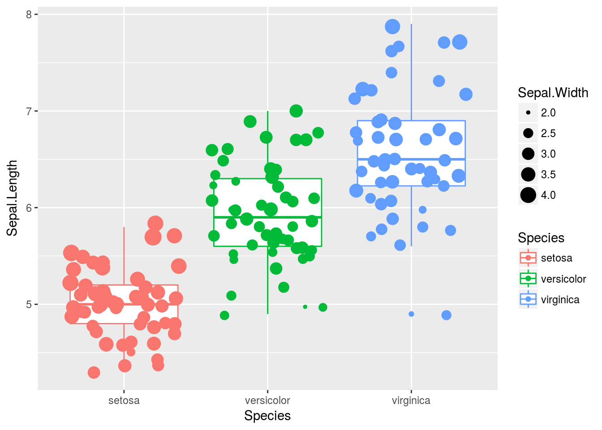
2.11 バイオリンプロット
バイオリンプロットを使うとデータの分布を更に視覚的に把握しやすくなります。
geom_violin(mapping = NULL, data = NULL, stat = "ydensity",
position = "dodge", ..., draw_quantiles = NULL, trim = TRUE,
scale = "area", na.rm = FALSE, show.legend = NA, inherit.aes = TRUE)iris %>%
ggplot2::ggplot(aes(x = Species, y = Sepal.Length, colour = Species)) +
ggplot2::geom_violin()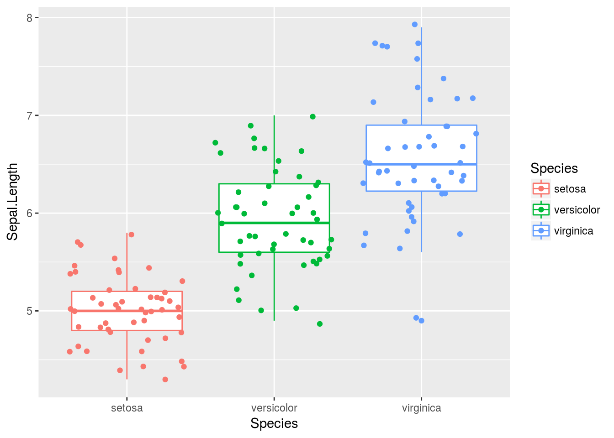
2.12 軸の入れ替え
ggplot2::coord_関数群を用いるとデータを変更することなく軸の操作が可能です。横軸と縦軸を入れ替えるにはggplot2::coord_flip関数を用います。
coord_flip(xlim = NULL, ylim = NULL, expand = TRUE)iris %>%
ggplot2::ggplot(aes(x = Species, y = Sepal.Length, colour = Species)) +
ggplot2::geom_boxplot() +
ggplot2::coord_flip()
2.13 軸の反転
軸を反転させるにはggplot2::scale_x_reverse、ggplot2::scale_y_reverse関数を用います。
scale_x_continuous(name = waiver(), breaks = waiver(), minor_breaks = waiver(),
labels = waiver(), limits = NULL, expand = waiver(),
oob = censor, na.value = NA_real_, trans = "identity",
position = "bottom", sec.axis = waiver())
scale_y_continuous(name = waiver(), breaks = waiver(), minor_breaks = waiver(),
labels = waiver(), limits = NULL, expand = waiver(),
oob = censor, na.value = NA_real_, trans = "identity",
position = "left", sec.axis = waiver())iris %>%
ggplot2::ggplot(aes(x = Sepal.Width, y = Sepal.Length, colour = Species)) +
ggplot2::geom_point() +
ggplot2::scale_x_reverse()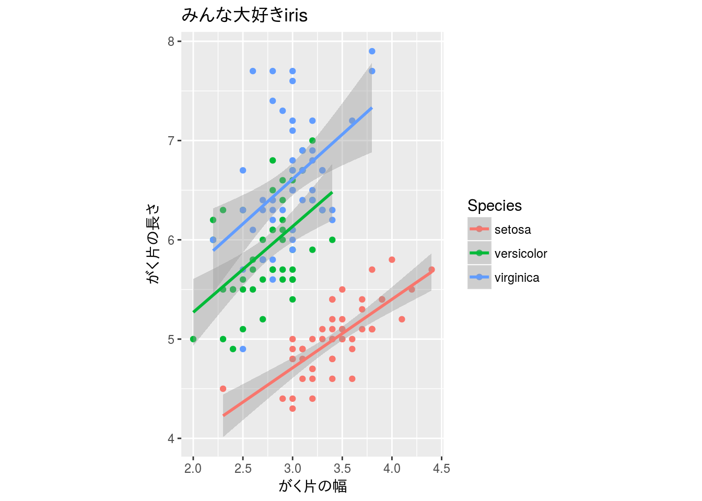
2.14 テキストラベルをつける
個々のデータにテキストラベルを付与することも可能ですが、データ数が多かったりデータの値が近接していたりすると逆に見難くなってしまうというデメリットもあります。テキストやラベルを表示するにはggplot2::geom_text関数またはggplot2::geom_label関数を用います。
geom_label(mapping = NULL, data = NULL, stat = "identity",
position = "identity", ..., parse = FALSE, nudge_x = 0, nudge_y = 0,
label.padding = unit(0.25, "lines"), label.r = unit(0.15, "lines"),
label.size = 0.25, na.rm = FALSE, show.legend = NA,
inherit.aes = TRUE)
geom_text(mapping = NULL, data = NULL, stat = "identity",
position = "identity", ..., parse = FALSE, nudge_x = 0, nudge_y = 0,
check_overlap = FALSE, na.rm = FALSE, show.legend = NA,
inherit.aes = TRUE)mtcars %>%
ggplot2::ggplot(aes(x = wt, y = mpg)) +
ggplot2::geom_point() +
ggplot2::geom_smooth(method = "lm") +
ggplot2::geom_text(aes(label = row.names(.), colour = cyl),
hjust = "inward", vjust = "inward")2.15 統計情報で描く
平均値とその標準誤差を計算し、平均値を棒グラフで描き、標準誤差をエラーバーで表示するということもggplot2::stat_summary関数を利用することで実現可能です。
stat_summary(mapping = NULL, data = NULL, geom = "pointrange",
position = "identity", ..., fun.data = NULL, fun.y = NULL,
fun.ymax = NULL, fun.ymin = NULL, fun.args = list(), na.rm = FALSE,
show.legend = NA, inherit.aes = TRUE)iris %>%
ggplot2::ggplot(aes(x = Species, y = Petal.Length, fill = Species)) +
ggplot2::stat_summary(fun.y = mean, geom = "bar", alpha = 0.5) +
ggplot2::stat_summary(fun.data = mean_cl_normal, geom = "errorbar",
width = 0.5)2.16 層別に描く
見やすくするために種別（Species）のデータを用いて層別のグラフにしてみましょう。層別に描くにはggplot2::facet_warpを用います。
facet_wrap(facets, nrow = NULL, ncol = NULL, scales = "fixed", shrink = TRUE,
labeller = "label_value", as.table = TRUE, switch = NULL,
drop = TRUE, dir = "h", strip.position = "top")引数facetsは下記のようにformula形式で指定することに注意して下さい。
iris %>%
ggplot2::ggplot(aes(x = Sepal.Width, y = Sepal.Length, colour = Species)) +
ggplot2::geom_point() +
ggplot2::ggtitle("みんな大好きiris") +
ggplot2::xlab("がく片の幅") + ggplot2::ylab("がく片の長さ") +
ggplot2::geom_smooth(method = "lm", se = TRUE) +
ggplot2::facet_wrap(~ Species)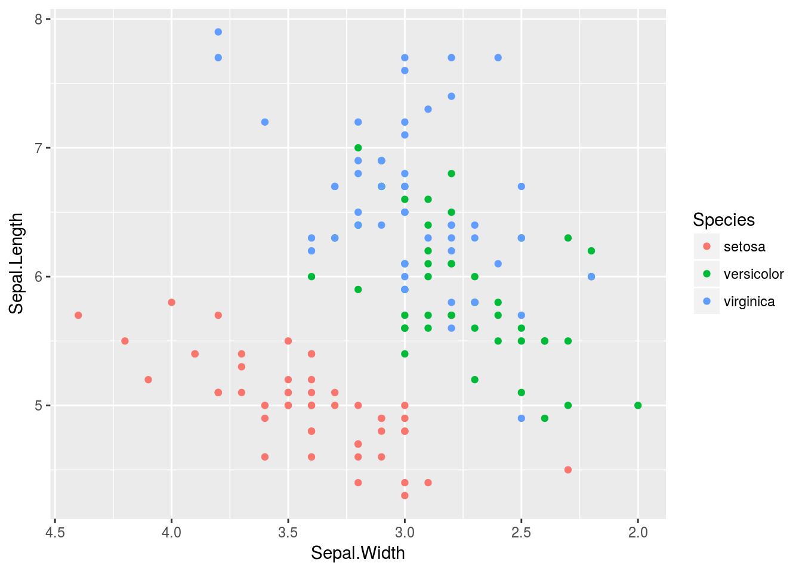
2.17 二変数で層別に描く
二変数でマトリクス状に層別にしたい場合はggplot2::facet_grid関数を用います。mtcarsデータセットを用いて車重（wt）と燃費（mpg）の関係をシリンダ数（cyl）とギア数（gear）で層別表示してみます。
facet_grid(facets, margins = FALSE, scales = "fixed", space = "fixed",
shrink = TRUE, labeller = "label_value", as.table = TRUE,
switch = NULL, drop = TRUE)mtcars %>%
ggplot2::ggplot(aes(x = wt, y = mpg, colour = cyl)) +
ggplot2::geom_point() +
ggplot2::geom_smooth(method = "lm", se = TRUE) +
ggplot2::facet_grid(gear ~ cyl)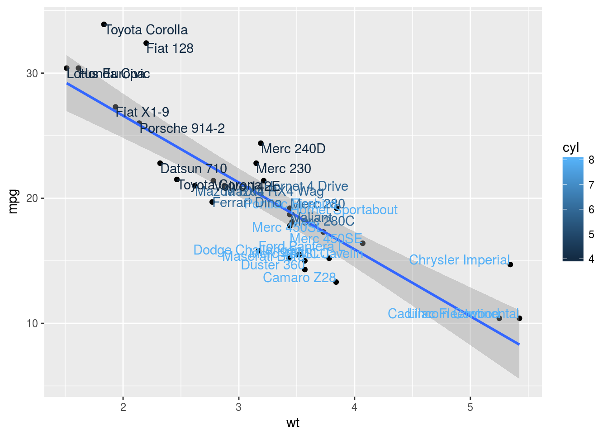
 CC BY-NC-SA 4.0, Sampo Suzuki [2017-07-30 23:13(JST)]
CC BY-NC-SA 4.0, Sampo Suzuki [2017-07-30 23:13(JST)]